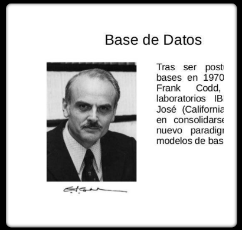
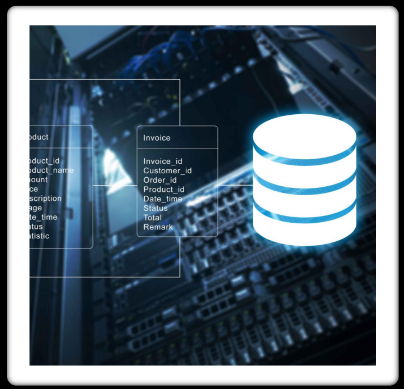

La recolección de datos es un proceso necesario para llevar a cabo un estudio estadístico. Los datos se recopilan para procesar la información y su subsiguiente interpretación. Los datos recolectados pueden ser cualitativos o cuantitativos. En cuanto a la historia de la recolección de datos, se remonta a la antigüedad. Los antiguos egipcios y babilonios recopilaban datos sobre población, impuestos y otros temas
En 1884, Herman Hollerith desarrolló el tabulador electromagnético de tarjetas perforadas con el fin de ayudar en el resumen de información y posteriormente a la contabilidad
En la década de los 60, se desarrollaron los primeros sistemas de gestión de bases de datos (DBMS) para manejar grandes cantidades de datos. En 1963, se celebró un simposio en California donde se escuchó por primera vez el término “bases de datos”. El simposio en California en 1963 fue organizado por la IBM y la Universidad de California en Berkeley. El término “bases de datos” se escuchó por primera vez en este simposio. El simposio se centró en el almacenamiento y la recuperación de información.
En la década de los 70, se desarrollaron los primeros sistemas de bases de datos relacionales. En 1970, Edgar Frank Codd publicó un artículo titulado “Un modelo relacional de datos para grandes bancos de datos compartidos” en el que presentaba su modelo relacional.
En la década de los 80, las bases de datos se convirtieron en una parte integral de la informática empresarial. Los sistemas de bases de datos se volvieron más sofisticados y comenzaron a incluir características como la recuperación ante desastres y la replicación. Las bases de datos relacionales se utilizaron en una amplia variedad de industrias, incluyendo la banca, la manufactura y el comercio minorista.
En la década de los 90, se crearon varias empresas de bases de datos. Algunas de las más importantes son:
Oracle Corporation: fundada en 1977, Oracle se convirtió en una de las empresas de bases de datos más grandes del mundo en la década de los 90.
Sybase: fundada en 1984, Sybase se convirtió en una empresa líder en el mercado de bases de datos relacionales en la década de los 90.
Informix: fundada en 1980, Informix se convirtió en una empresa líder en el mercado de bases de datos relacionales en la década de los 90.
Una base de datos es un conjunto de datos organizados y estructurados que se pueden acceder, gestionar y actualizar fácilmente. Las bases de datos se utilizan para almacenar información en una forma que se pueda recuperar y utilizar fácilmente.
Una base de datos relacional es un tipo de base de datos que utiliza una estructura de tabla para almacenar y organizar los datos. En una base de datos relacional, los datos se organizan en tablas que contienen filas y columnas. Cada tabla en una base de datos relacional tiene una clave primaria que se utiliza para identificar de forma única cada fila en la tabla. Las tablas se pueden relacionar entre sí mediante el uso de claves externas. Las bases de datos relacionales se utilizan en una amplia variedad de aplicaciones, incluyendo la banca, la manufactura y el comercio minorista.
Un sistema gestor de bases de datos (SGBD) es un software que se utiliza para gestionar y administrar bases de datos. Los SGBD permiten a los usuarios crear, modificar y eliminar datos en una base de datos. Los SGBD también proporcionan herramientas para realizar consultas y análisis de datos. Algunos ejemplos de SGBD incluyen MySQL, Oracle y Microsoft SQL Server.
Las bases de datos se pueden clasificar en varios tipos diferentes. Algunas de las clasificaciones más comunes incluyen:
Las bases de datos dinámicas son aquellas que se actualizan automáticamente en tiempo real. Algunos ejemplos de bases de datos dinámicas incluyen:
Las bases de datos estáticas son aquellas que no se actualizan automáticamente en tiempo real. En cambio, los datos se actualizan manualmente según sea necesario.
Algunos ejemplos de bases de datos estáticas incluyen:
XAMPP es una herramienta de desarrollo que te permite probar tu desarrollo web basado en PHP en tu propio ordenador sin necesidad de tener acceso a internet. Si eres un diseñador web o desarrollador web que recién está comenzando, no es necesario saber sobre las configuraciones de servidores (aun), ya que XAMPP te provee de una configuración totalmente funcional desde el momento que lo instalas. Básicamente lo extraes y listo. Es bueno acotar que la seguridad de datos no es su punto fuerte, por lo cual no es suficientemente seguro para ambientes grandes o de producción.
XAMPP es una distribución de Apache que incluye diferentes softwares libres. El nombre es un acrónimo compuesto por las iniciales de los programas que lo constituyen:
Además de estos componentes principales, esta distribución gratuita también incluye, según el sistema operativo, otras herramientas como el servidor de correo Mercury, el programa de administración de bases de datos phpMyAdmin, el software de analítica web Webalizer, OpenSSL, Apache Tomcat y los servidores FTP FileZilla o ProFTPd.
Instalación de XAMPP y WORKBENCH ejercicio